Final-year undergraduate studying Computer Science Engineering @ University of Michigan-Ann Arbor.
Within these,software engineering, full-stack development, and product management are my primary professional interests. Originally from India but grew up in Benin
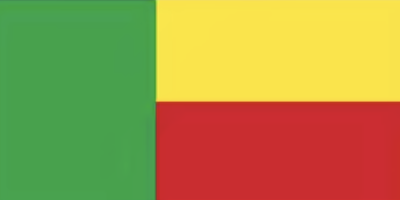
, I bring a diverse perspective to the tech industry. Feel free to reach out to me via email or drop a message on linkedIn!Research Assistant - Distributed Protocols
- Collaborating with Prof. Karem A. Sakallah on deriving FOL formulas for unbounded sets of reachable states in distributed protocols
- Developing Python script to replace complex C++ parser, improving efficiency with 15% faster processing
- Enhanced code translation from Ivy to executable format with 17% reduced memory usage
Web Engineer at CAEN
- Developed JavaScript features and migrated 15 websites to WordPress, boosting event registrations by 30%
- Engineered automated data pipeline with Google Apps Script, synchronizing Google Sheets, WordPress, and Constant Contact, reducing manual entry by 75% and automating emails to 55,000+ students
- Implemented Jenkins CI/CD pipeline for 20+ microservices and optimized Nginx as reverse proxy, reducing load times by 20%
- Examples of websites deployed:CoE Project Management Team (PMT),Macromolecular Science and Engineering and Shao Manufacturing Lab
Software Engineering Intern at MTN Group
- Designed 30+ frontend components using React and JavaScript for product catalog application
- Built backend services with Python and Django, optimizing SQL queries for 25% faster response times
- Implemented LDAP authentication and role-based access, reducing unauthorized access by 50%
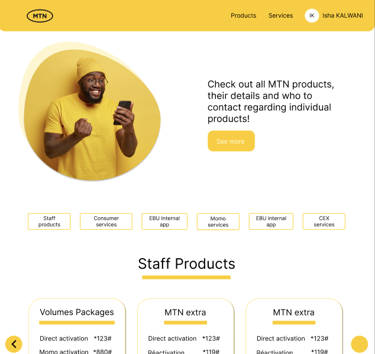
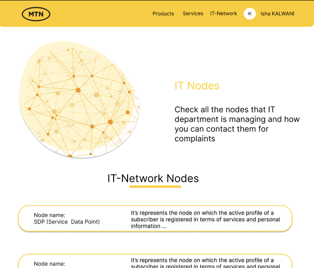
Product and Software Engineer at A2 Deals
- Developed secure voting system using JavaScript, MySQL, and Unix
- Implemented RSA and Caesar ciphers for data security
- Enhanced user participation by 35% and reduced turnaround time by 300%
- Led UI/UX design using Figma for collaborative prototyping
Web Engineer at MUNthly
- Led digital campaigns reaching 1M+ students for Model United Nations organization
- Implemented code updates using Git and Docker
- Collaborated with team of twelve to optimize software performance and resolve bugs
High-Altitude Weather Balloon Instrumentation Engineer
- Designed and deployed high - altitude atmospheric and remote sensing instruments
- Utilized MATLAB for sensor control and data visualization
- Implemented robust testing procedures for high - altitude balloon flights
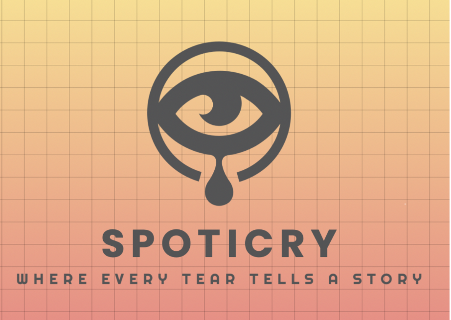
SpotiCry
Full - stack emotional analytics platform
As a college student juggling classes, deadlines, and life, I realized we all needed a better way to track and understand our emotional ups and downs. Inspired by how Spotify Wrapped tells your music story, SpotiCry helps you understand your crying patterns with insightful data.
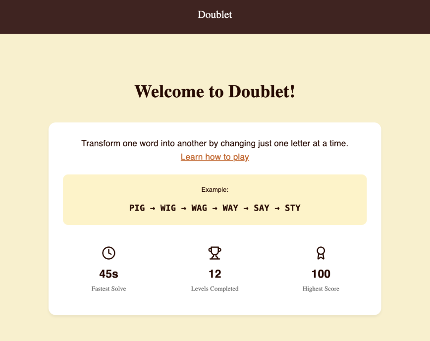
Doublet
Word Transformation Game
Obsessed with NYT's Spelling Bee and word games, I wanted to create a word puzzle that challenges players to find optimized paths between words, combining my love for linguistics with algorithmic problem - solving. Doublet is inspired particularly from Lewis Carroll (who wrote Alice in Wonderland).
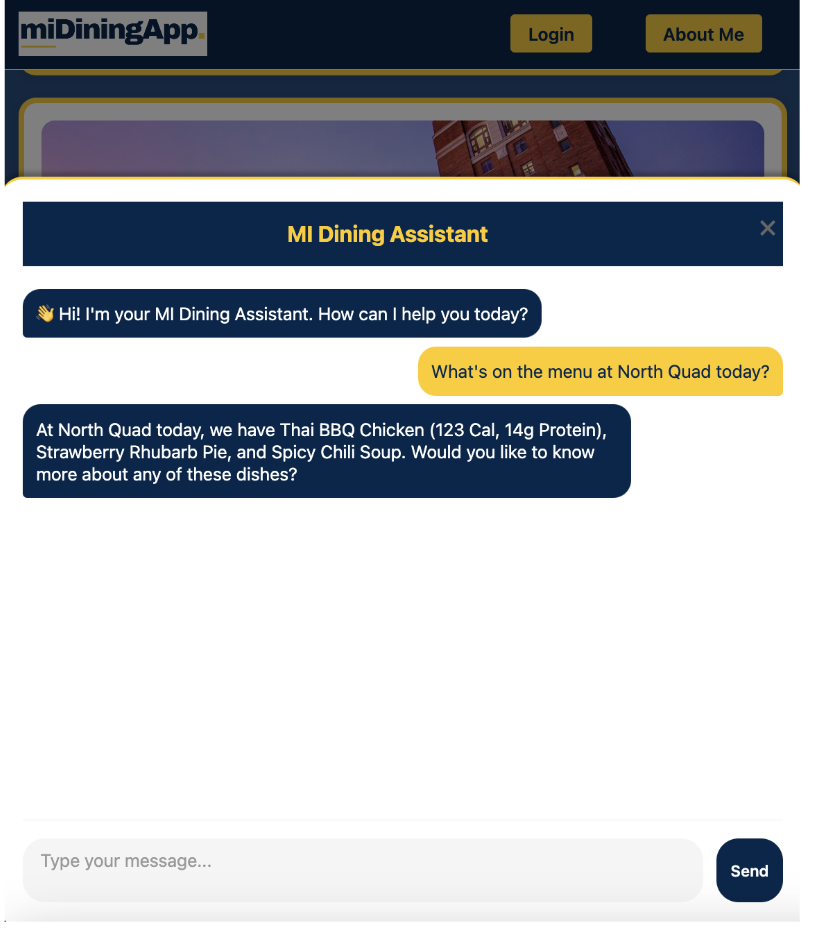
MI Dining
Conversational Assistant for University of Michigan Dining
Inspired by the daily challenge students face in finding suitable dining options at Umich, my team members and I created this AI assistant to make campus dining more accessible and personalized, especially for those with dietary restrictions or tight schedules.
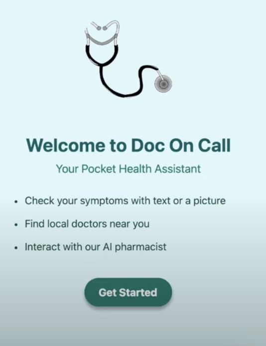
Doc On Call
HIPAA - compliant medical app with AI - powered symptom analysis (Mhacks 17)
Healthcare accessibility inspired me to create a tool that bridges the gap between immediate medical concerns and professional care, making preliminary medical guidance more accessible while maintaining strict privacy standards.
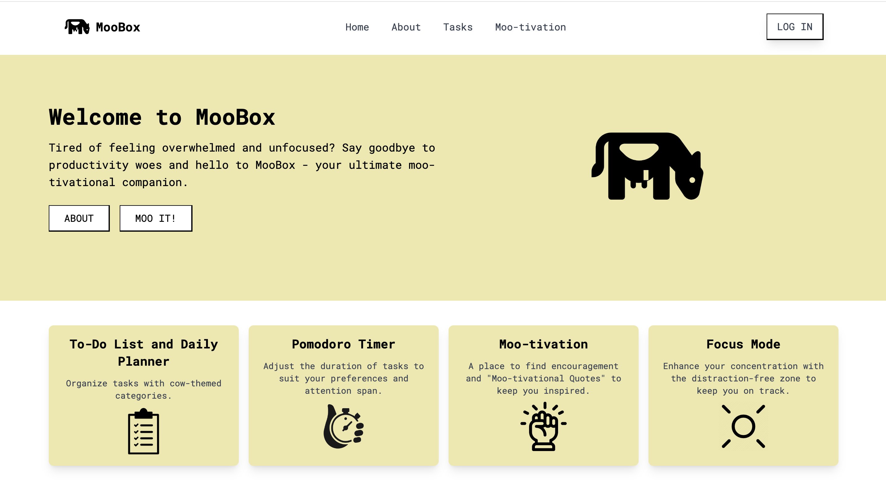
MooBox
A full-stack productivity web application with a cow theme
Tired of feeling overwhelmed with tasks? I created MooBox as a playful take on productivity tools and also, I love cows : ) (PS: this was a gift made for a loved one)
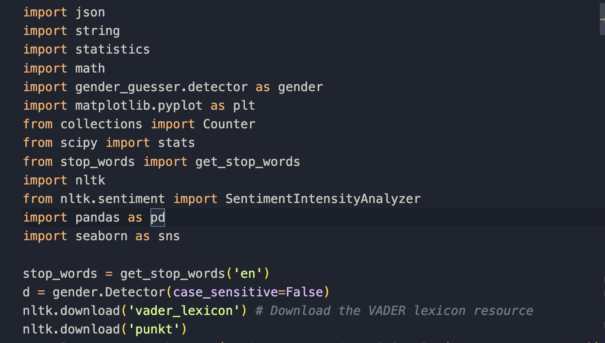
Amazon Review Gender Analyzer
Data Mining & NLP Tool for Amazon Reviews
Fascinated by the potential gender biases in online reviews, I developed this tool to analyze language patterns and reveal insights about how different genders approach product reviews differently.
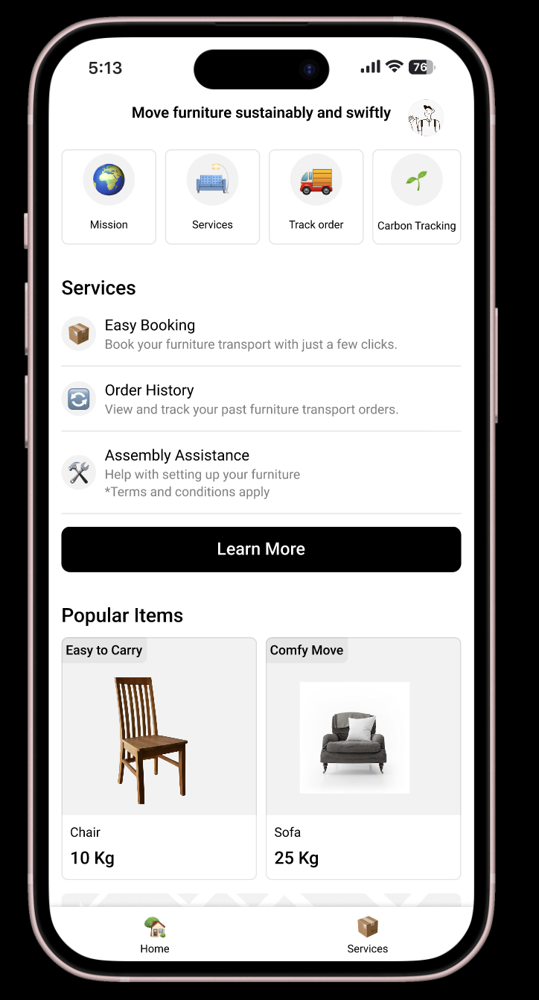
AirRide
Eco - Friendly Furniture Relocation App
Inspired by the environmental impact of furniture disposal in college towns, I created AirRide to help students sustainably manage furniture transitions while building a circular economy within the university community.
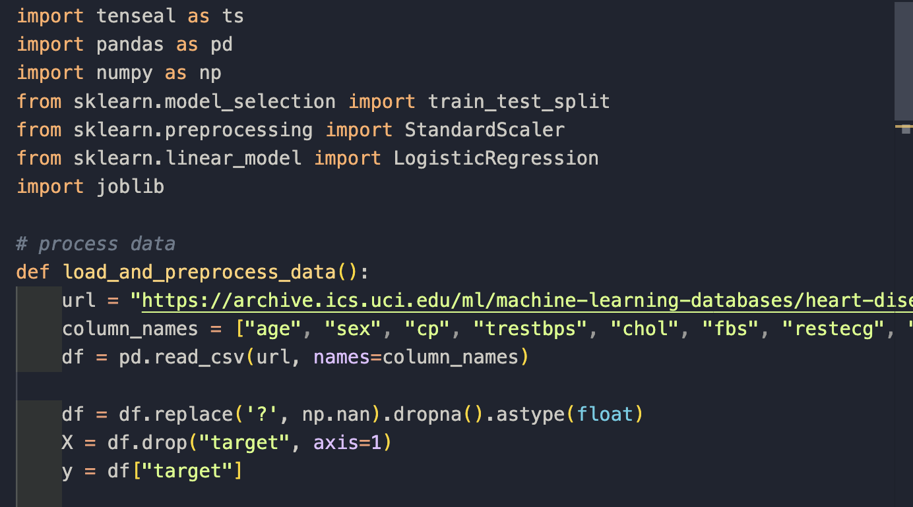
PredHealth
Secure prediction system using homomorphic encryption for patient data privacy
Driven by the critical need for patient privacy in healthcare ML models, I developed this system to demonstrate how sensitive medical data can be processed securely while maintaining prediction accuracy.
High - Altitude Weather Balloon
Atmospheric and remote sensing instrumentation for high - altitude balloon flights
Fascinated by atmospheric science and hands - on engineering, I joined this project to explore how we can collect meaningful data about our atmosphere while learning about sensor integration and real - time data processing.
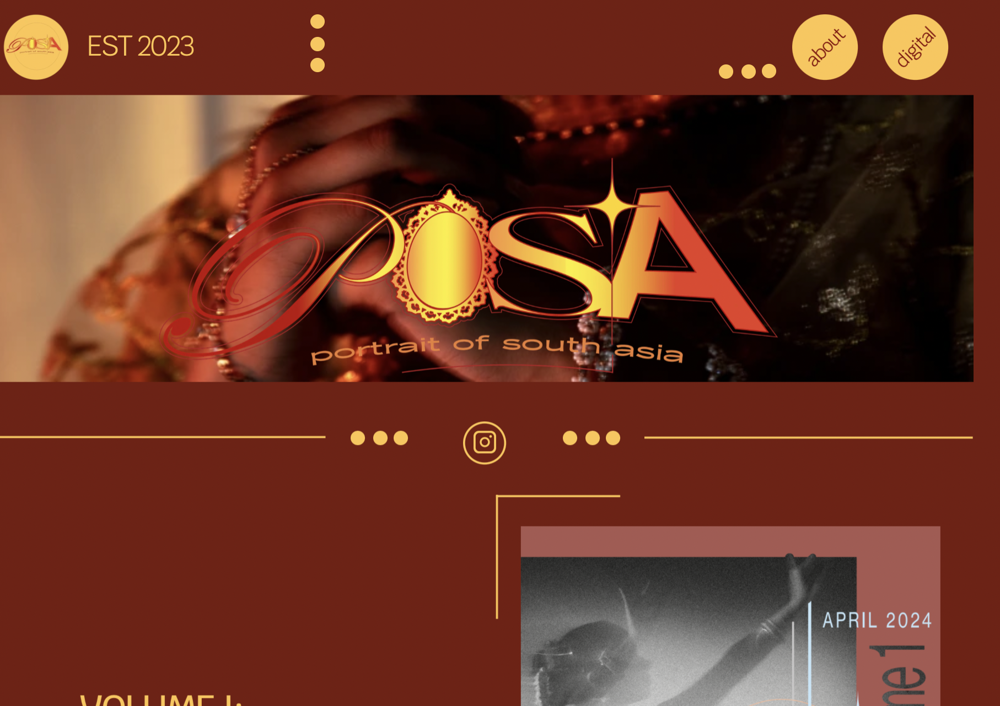
POSA Magazine
Digital platform for authentic South Asian narratives at University of Michigan
Recognizing the need for authentic South Asian representation in campus media, I helped create POSA as a platform where students could share their stories, experiences, and cultural perspectives.
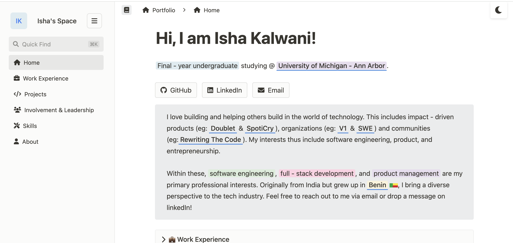
Portfolio Website
Personal portfolio website with Notion-inspired design
You're looking at it! This very website is a project showcasing... itself. Meta, right?
Teaching & Mentorship
- Instructional Aide - EECS 298: Consequences of Computing
- Instructional Aide - EECS 364: Building Data - Driven Web Applications
- Teaching coding to underprivileged kids through Femcoders
- Grader for EECS 484: Database Management Systems
Organizations & Communities
Programming Languages
Web Technologies
Tools & Frameworks
Git Docker AWS Linux FigmaData & Analytics
MongoDB NumPy Pandas SupabaseAbout
From growing up in Benin to studying at University of Michigan, my path has been shaped by diverse experiences and perspectives. Each challenge has been a stepping stone in my journey, fueling my passion for creating impactful solutions.
I thrive on translating complex problems into elegant solutions. Whether it's full - stack development or AI systems, I am passionate about building technology that makes a difference while continuously learning and adapting to new challenges.
When I am not immersed in working on my side projects, you will find me choreographing dance routines, listening to music, or practicing French.
I am always seeking opportunities to innovate and create meaningful impact. Let's connect and build something amazing together! I am currently looking for new - grad roles.